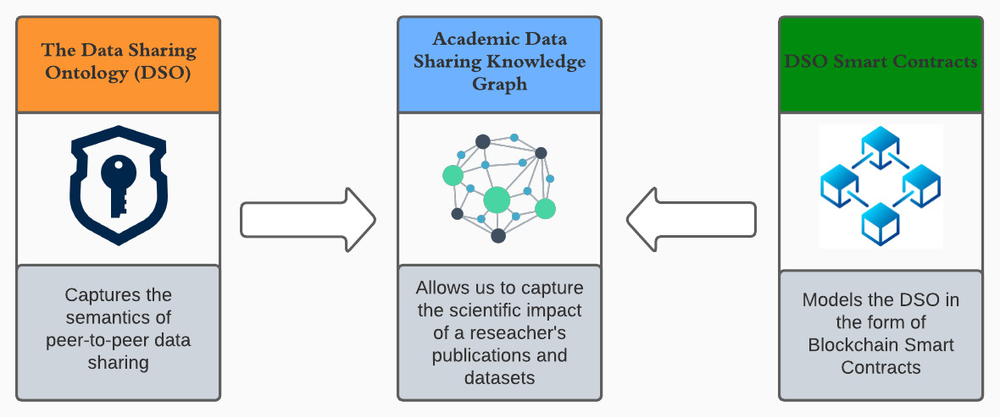
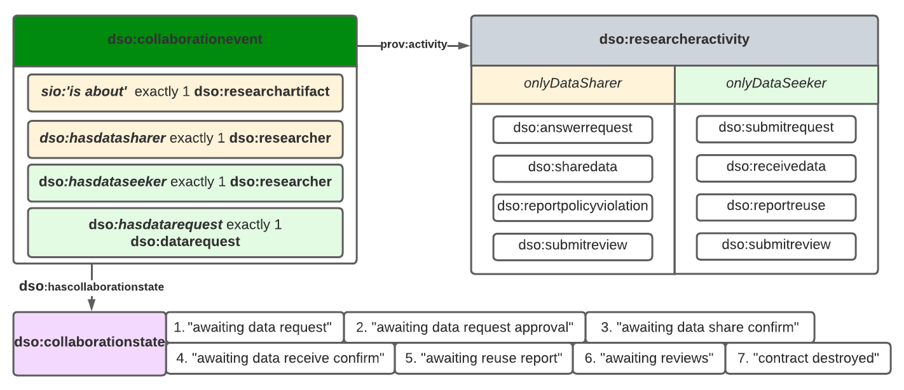
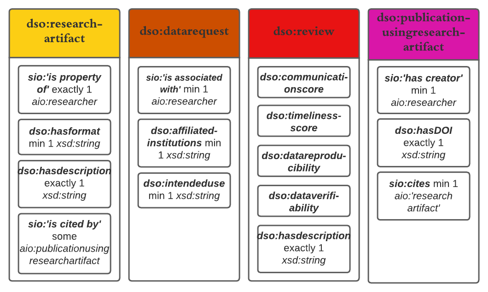

The DSO
The Data Sharing Ontology (DSO) intends to provide a semantic model to power a blockchain application to handle, confirm, and incentivize research data sharing. The ontology is built upon basic blockchain components such as addresses and transaction hashes and uses simple logic such that it could be easily handled by smart contracts

Our ontology focuses around a single entity, the collaboration event (dso:collaborationevent). Each collaboration event is between two researchers (dso:researcher). The first is a data seeker, referenced by (dso:hasdataseeker), who is seeking a research artifact (dso:researchartifact). The other is a data sharer, referenced by (dso:hasdatasharer) who is the owner of the specific research artifact. The collaboration event then follows a set of enumerated states within a custom datatype, (dso:collaborationstate), beginning with `Awaiting Data Request' and ends with `Contract Destroyed'. Each participant has a set of activities (sio:activity) that trigger the collaboration event to move to its next state. The states and activities are shown below.

Several of the different activities of the participants require the submission of data. In order to effectively store entities and their information, we capture semantics surrounding these entities by defining fields of information which must be included. The aim in these definitions is to be able to effectively capture these entities while utilizing a decentralized storage system such as the Inter-Planetary File System (IPFS) with a JSON format. These semantics are shown below.

Ontology Links
- Ontology Documnetation generated using the Widoco tool can be found here: DSO Widoco Documentation
- The DSO owl file can found here: dso.owl
Ontology Metadata
Reused Ontologies
Ontology Prefixes
Prefix
Links
rdf
Resource Description Framework
rdfs
RDF Schema
owl
Web Ontology Language
xsd
XML Schema Definition
skos
Simple Knowledge Organization System
dso
Academic Incentive Ontology
sio
SemanticScience Integrated Ontology
ep
Provenance Ontology
Reused Ontologies
Ontology Prefixes
| Prefix | Links |
|---|---|
| rdf | Resource Description Framework |
| rdfs | RDF Schema |
| owl | Web Ontology Language |
| xsd | XML Schema Definition |
| skos | Simple Knowledge Organization System |
| dso | Academic Incentive Ontology |
| sio | SemanticScience Integrated Ontology |
| ep | Provenance Ontology |